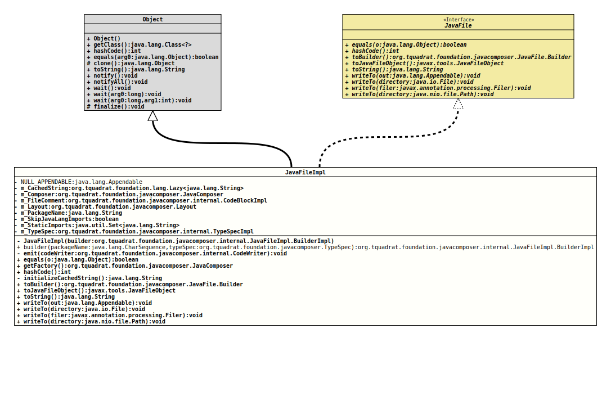

Class JavaFileImpl
java.lang.Object
org.tquadrat.foundation.javacomposer.internal.JavaFileImpl
- All Implemented Interfaces:
JavaFile
@ClassVersion(sourceVersion="$Id: JavaFileImpl.java 943 2021-12-21 01:34:32Z tquadrat $")
@API(status=INTERNAL,
since="0.0.5")
public final class JavaFileImpl
extends Object
implements JavaFile
The implementation of
JavaFile
for a Java file containing a single top level class.- Author:
- Square,Inc.
- Modified by:
- Thomas Thrien (thomas.thrien@tquadrat.org)
- Version:
- $Id: JavaFileImpl.java 943 2021-12-21 01:34:32Z tquadrat $
- Since:
- 0.0.5
- UML Diagram
-

UML Diagram for "org.tquadrat.foundation.javacomposer.internal.JavaFileImpl"
{kind=link}
-
Nested Class Summary
Nested ClassesModifier and TypeClassDescriptionstatic final classThe builder for an instance ofJavaFileImplas an implementation ofJavaFile.Builder.Nested classes/interfaces inherited from interface org.tquadrat.foundation.javacomposer.JavaFile
JavaFile.Builder -
Field Summary
FieldsModifier and TypeFieldDescriptionprivate final org.tquadrat.foundation.lang.Lazy<String>Lazily initialised return value oftoString()for this instance.private final JavaComposerThe reference to the factory.private final CodeBlockImplThe file comment.private final LayoutThe layout for the output of thisJavaFile.private final StringThe name of the package for the class.private final booleanFlag that determines whether to skip the imports for classes from the packagejava.lang.The static imports.private final TypeSpecImplTheTypeSpecImplfor the class in theJavaFileImpl.private static final AppendableAn implementation ofAppendablethat places any data that is put to it into the void. -
Constructor Summary
ConstructorsModifierConstructorDescriptionprivateJavaFileImpl(JavaFileImpl.BuilderImpl builder) Creates a newJavaFileImplinstance. -
Method Summary
Modifier and TypeMethodDescriptionstatic JavaFileImpl.BuilderImplbuilder(CharSequence packageName, TypeSpec typeSpec) Deprecated, for removal: This API element is subject to removal in a future version.private final voidemit(CodeWriter codeWriter) Writes this instance ofJavaFileto the givenCodeWriterinstance.final booleanfinal JavaComposerReturns theJavaComposerfactory.final inthashCode()private final StringThe initializer form_CachedString.final JavaFile.BuilderReturns a new builder that is initialised with thisJavaFileinstance.final JavaFileObjectCreates aJavaFileObjectfrom this instance ofJavaFile.final StringtoString()final voidWrites thisJavaFileinstance to the given target folder as a UTF-8 file, using the standard directory structure for the packages.final voidwriteTo(Appendable out) Writes thisJavaFileinstance to the givenAppendable.voidWrites thisJavaFileinstance to the given target folder as a UTF-8 file, using the standard directory structure for the packages.final voidWritesJavaFileinstance to the givenFilerinstance.
-
Field Details
-
NULL_APPENDABLE
An implementation ofAppendablethat places any data that is put to it into the void. -
m_CachedString
Lazily initialised return value oftoString()for this instance. -
m_Composer
The reference to the factory. -
m_FileComment
The file comment. -
m_Layout
The layout for the output of thisJavaFile. -
m_PackageName
The name of the package for the class. -
m_SkipJavaLangImports
Flag that determines whether to skip the imports for classes from the packagejava.lang. -
m_StaticImports
The static imports. -
m_TypeSpec
TheTypeSpecImplfor the class in theJavaFileImpl.
-
-
Constructor Details
-
JavaFileImpl
Creates a newJavaFileImplinstance.- Parameters:
builder- The builder that was used to collect the data for the new instance.
-
-
Method Details
-
builder
@Deprecated(since="0.2.0", forRemoval=true) @API(status=DEPRECATED, since="0.0.5") public static JavaFileImpl.BuilderImpl builder(CharSequence packageName, TypeSpec typeSpec) Deprecated, for removal: This API element is subject to removal in a future version.Got obsolete with the introduction ofJavaComposer.Creates a builder for a new instance ofJavaFilefrom the given package name and class definition.- Parameters:
packageName- The package name.typeSpec- The class definition.- Returns:
- The builder.
-
emit
Writes this instance ofJavaFileto the givenCodeWriterinstance.- Parameters:
codeWriter- The code writer.- Throws:
UncheckedIOException- A problem occurred when writing to the output target.
-
equals
-
getFactory
Returns theJavaComposerfactory.- Returns:
- The reference to the factory.
-
hashCode
-
initializeCachedString
The initializer form_CachedString.- Returns:
- The return value for
toString().
-
toBuilder
Returns a new builder that is initialised with thisJavaFileinstance. -
toJavaFileObject
Creates aJavaFileObjectfrom this instance ofJavaFile.- Specified by:
toJavaFileObjectin interfaceJavaFile- Returns:
- The
JavaFileObject.
-
toString
-
writeTo
Writes thisJavaFileinstance to the givenAppendable.- Specified by:
writeToin interfaceJavaFile- Parameters:
out- The output target.- Throws:
IOException- A problem occurred when writing to the output target.
-
writeTo
Writes thisJavaFileinstance to the given target folder as a UTF-8 file, using the standard directory structure for the packages.- Specified by:
writeToin interfaceJavaFile- Parameters:
directory- The target folder.- Throws:
IOException- A problem occurred when writing to the output target.
-
writeTo
WritesJavaFileinstance to the givenFilerinstance.- Specified by:
writeToin interfaceJavaFile- Parameters:
filer- The target.- Throws:
IOException- A problem occurred when writing to the output target.
-
writeTo
Writes thisJavaFileinstance to the given target folder as a UTF-8 file, using the standard directory structure for the packages.- Specified by:
writeToin interfaceJavaFile- Parameters:
directory- The target folder.- Throws:
IOException- A problem occurred when writing to the output target.
-
JavaComposer.